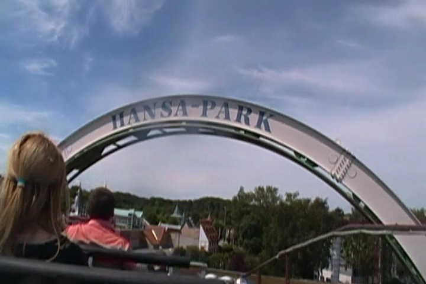

| |
Rasender Roland Review

We're here at Hansa Park where's we'll be revewing their Roller Skater. Well, sort of. It's a Roller Skater. But it's a custom Roller Skater. The layout isn't anything like that of your typical Roller Skater. In fact, this is one of those rides that blurs the line between kiddy coaster and family coaster. I know that the Big Roller Skaters touch that line. But this is flat out in the gray area. I've heard some people just flat out call this a Mine Train. Eh...I wouldn't call it that. But I do see their point of view. So let's hop on and go for a ride. We pull down the lap bar, and we're off. We go around a turn and climb the lifthill. We get a good view of the ride and are heading straight for the loop of Nessie. We just get closer and closer. Eventually, we reach the top. And yep. We thread the loop of Nessie. Make sure the ride doesn't eat us. Anyways, we then head down a curved first drop into a helix. Wee. We then head up a hill and around a turn. We go down a small dip and then rise back up, only to head into a curved drop. Yay! More speed! We then go into a banked curve and actually get some laterals. Ooh, this is getting forceful for a Roller Skater. We dip down, rise back up, head into a turn, and then into a downward helix. Always fun. We glide over a small hill, and a turn into the brake run. For a Roller Skater, it's a really fun ride. If this counts as a kiddy coaster, it's definetly one of the best ones. Just a fun little ride. Give it a ride if Roller Skaters are your thing.
4/10
Location: Hansa Park
Opened: 1993
Built by: Vekoma
Last Ridden: June 17, 2014
Rasender Roland Photos


|